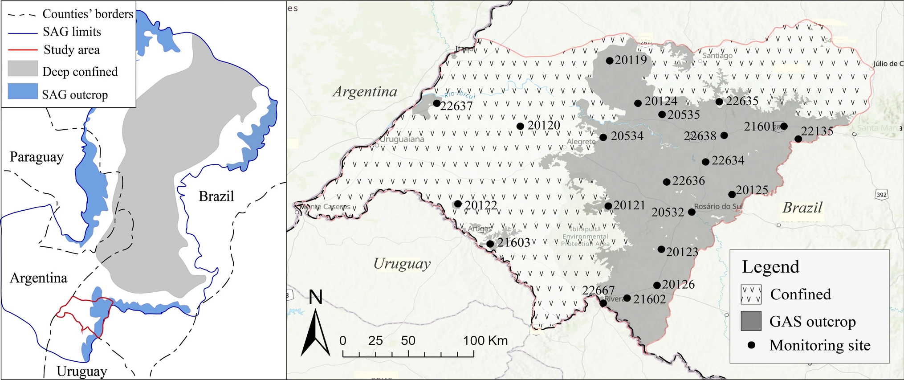

Unravelling recharge mechanisms along the Guarani aquifer system (SAG) outcrop in southern Brazil

Resumo em Português
A compreensão da recarga é uma etapa fundamental na quantificação da sustentabilidade e vulnerabilidade das reservas de água subterrânea e na promoção da implementação adequada de políticas de gestão. No sul do Brasil, o Sistema Aquífero Guarani (SAG) é crescentemente utilizado como fonte de água para populações rurais e urbanas e para atividades agrícolas. Sendo 90% confinado, as zonas de afloramento regional do SAG são geralmente consideradas as áreas de recarga, mas os mecanismos locais de recarga ainda carecem de delimitação precisa. Séries temporais do nível freático ao longo de um período de dois anos, provenientes de 21 poços de monitoramento na zona de afloramento sul, foram investigadas para avaliar a recarga local do SAG. As estimativas de recarga calculadas pelo método da flutuação do nível freático (WTF) foram comparadas às séries temporais em termos de fatores de autocorrelação e correlação cruzada. Os resultados indicam que as condições locais afetam fortemente a percolação da água na zona não saturada, com evidências de fluxo por matriz e por caminhos preferenciais alimentando os locais de monitoramento — remetendo ao efeito de memória do nível freático, controlado pelos caminhos de fluxo até o poço e sua resposta aos eventos locais de precipitação. O fluxo por matriz ocorre de forma generalizada na área de estudo, enquanto o fluxo preferencial apresenta ocorrência mais restrita, porém associada às maiores taxas de recarga. Embora estudos futuros possam quantificar o volume real de recarga relacionado a cada mecanismo, este trabalho demonstra explicitamente que os mecanismos de fluxo preferencial não devem ser ignorados, fornecendo subsídios para a avaliação da sustentabilidade do aquífero e de sua vulnerabilidade a contaminantes modernos.